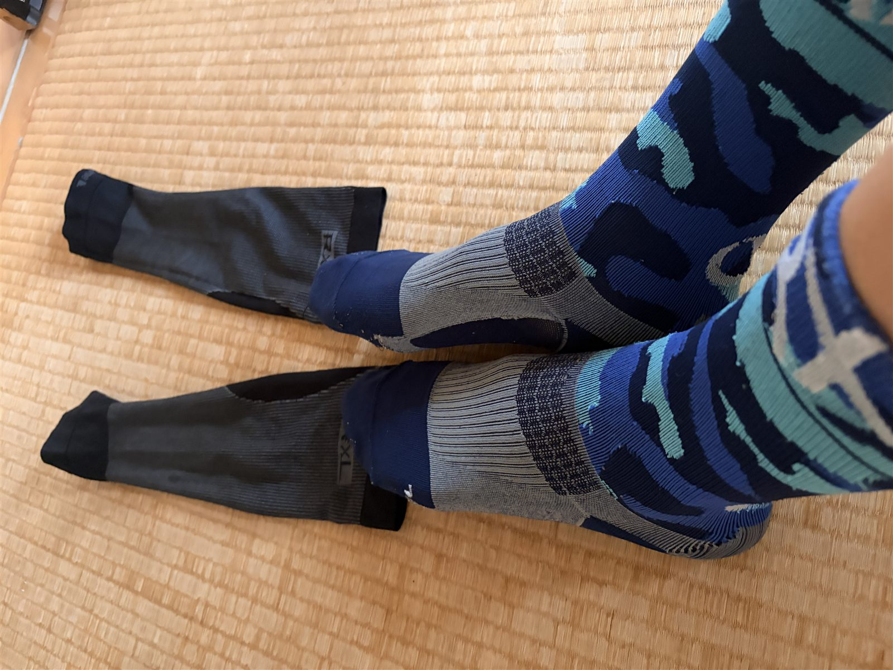

心拍計を付けて太平ライド。レスト明けでもTSS120
月曜をレストにして、その翌日に太平でしっかり登ってきた。レスト明けだから軽く流す・・・なんてことはなく、結果はTSS120.3。ついでに今日から、腕バンド型の心拍計も10年ぶりに復活させた。

全部読むのが面倒な人向けまとめ
- やったこと月曜レスト明けの太平ライド。登る所は登り、休む所は休む
- 負荷TSS120.3（レスト明けでも軽くない）
- 心拍計腕バンド型を10年ぶりに初投入。Garminのリカバリー連呼が少しマシに
- 登りLap7=7:22/310W、Lap13=4:13/306W。後半も踏めた
- R×L装備ソックス＋ゲイターも試用。体感は面白いが断定はしない（詳細は別記事）
月曜は休んで、その翌日に登りに行った
月曜はレストにした。最近は週6くらいで乗っているので、月曜は意図的に休む流れにしている。昔の私は「乗れば強くなる」と思っていたが、今は少し考え方が変わってきた。行ける日は攻めて、休む日は休む。AIにも何度かそう言われているし、実際この練習量だと、休みを入れないと次の強度が出せない気がしている。
そして今日が、そのレスト明けの外ライド。目的はシンプルに「太平でしっかり登る」、それだけだった。天気は良かった、というか暑かった。平均気温28.8℃、Garmin上の最高気温はなんと41℃。さすがに実際の気温というより直射日光やサイコン周りの熱も入っていそうだが、暑かったのは間違いない。
10年以上ぶりに心拍計を付けた
今日から心拍計を付けた。正確には昔も使っていたことがあるが、当時は胸に巻くタイプで、これがどうにも苦しくて使うのをやめてしまった。今回は腕に付けるタイプで、胸が苦しくない分かなり気楽だった。詳しい話は別記事に回すとして、ひとつ言えるのは、心拍が入るとデータの見え方がかなり変わるということ。
これまではGarminにやたら「リカバリー」扱いされていた。こっちはローラーでえづいたり、登りで普通に苦しんだりしているのに、Garminは涼しい顔でリカバリー認定してくる。人の心がないのか、と思っていた。いや、機械なので当然ない。それが今日は、心拍データが入ったことで、Garminの評価も少し現実に近づいた感じがある。
レスト明けの脚は、まあ軽かった
走り出してみると、脚は悪くなかった。「めちゃくちゃ軽い！」というほどではないが、レスト明けらしく普通に動く。高強度をいきなり連発できるかは別として、登るための準備はできている感じだった。
今日の意識は、ずっと踏み続けることより、登る所はしっかり登って、つなぎでは落とすというメリハリ。最近の自分の中で少しずつ大事になってきているのが、この「休む所でちゃんと休む」ことである。昔はなんとなく全部を頑張ろうとして、肝心な所で出力が出なかった。今日は登りで踏んで、その代わりつなぎでは落とす。データを見ても、その感じはちゃんと出ていた。
今日のデータ
- 獲得標高479m
- 20分最大平均パワー262W
- 最大パワー623W
- 最大心拍170bpm
- 平均ケイデンス83rpm
- 平均気温 / 推定発汗量28.8℃ / 1,286ml
TSS120.3。これは軽くない。レスト明けだから軽く走った、という日ではなく、ちゃんと練習した日だった。
一番きつかったのはLap7
今日の一番きつかった登りはLap7。7分22秒を平均310W（NP316W）、心拍は平均159・最大168bpm。しっかり苦しかったが、レスト明けでも脚はちゃんと反応していた。7分ちょっとを平均310Wで登れたので、今日のメインとしてはかなり良い内容だったと思う。ちなみに体重は75kgなので4.1倍。これを続けられると単独フジヒルゴールドが出来るらしい。しばらくは無理かな。
後半は垂れるかと思いきや、Lap13で4分13秒・平均306W。序盤だけ元気だったわけではなく、後半にもう一回踏めたのは、素直に良い材料である。
R×Lソックスとゲイターも投入

今日から、昔買ったR×LのソックスとレーシングゲイターSLRも使ってみた。ソックスは昔ヒルクライム会場の物販で買ったもので、古いので記事では「R×Lのソックス」くらいにしておく。ゲイターも買ったまま、あまり使っていなかった。なぜ急に使ったかというと、単純に「出力が高くなるなら使ってみよう」と思ったから。雑である。でも、実験体Aなので仕方ない。早く慣れれば不正以外なんでもする所存である。
これを履いたからパワーが上がった、と断言するつもりはない。もしかしたらプラシーボかもしれない。ただ、体感としては少し面白かった。いつもは「踏むぞ！」と思って自分で蛇口を開いてパワーを出す感じだが、今日は常に蛇口が少し開きっぱなしになっているような感覚があった。ふわふわして踏めなさそうな感覚もあるのに、実際には出力は出ている。この感じはもう少し試してみたい。ただ、ソックスとゲイターの詳しい話は別記事に回す。今日ここで深掘りすると、太平ライドの話がどこかへ行ってしまう。
休んだ翌日に踏めたのは収穫
今回いちばん良かったのは、レスト明けにしっかり踏めたことだと思う。休んだ翌日に脚が動く。当たり前のようだが、これがけっこう大事な気がする。昔の私は休むと弱くなるような気がして、乗らない日は損をしている感覚もあった。
でも今は少し違う。休んだから、今日Lap7で踏めた。休んだから、後半のLap13でももう一回踏めた。もちろん1日休んだだけで全部が変わるわけではないが、少なくとも「休む＝サボり」ではない。AIに「休む日も必要」と言われて半信半疑で取り入れている部分もあるが、こうしてレスト明けにTSS120まで踏めると、少し説得力が出てくる。AI、たまには正しい。たまには。
今日やってみて思ったこと
今日はかなり良いライドだった。心拍計でデータの見え方が増えて、Garminもいつものリカバリー連呼ではなくなった。登る所はしっかり登れて、休む所はしっかり休めた。レスト明けの脚も、まあ軽かった。さらにR×L装備の体感も面白く、効果があるかはまだ分からないが、感覚としては「常に蛇口が少し開いている」感じがあった。これは今後も試す価値がありそうだ。
自分用メモ
- 木曜ローラー。20分SSTのあとに15分FTPペースを狙う
- 土曜友人と唐沢山でゴルビー
- 見るところ今日の疲労がどこまで残るか
今週はなかなか濃い。休む日は休んだ、今日はしっかり登れた。あとはこの疲労がどこまで残るか、そこも含めて富士ヒルゴールドに向けた実験である。